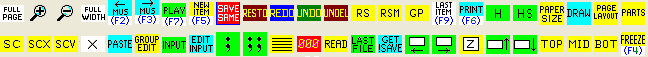
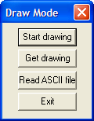

The Draw Program (type DRAW)
To start the DRAW program you must clear the screen of any data. Type RS or click on the RS box. Then type DRAW or click on the DRAW box..

The following dialog box will appear.

THIS SECTION OF HELP IS UNFINISHED.
DPY = export screen (display) to input for DRAW program